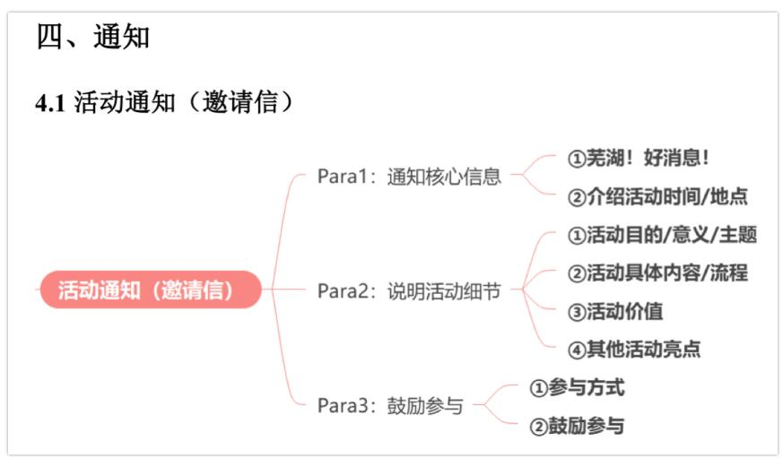
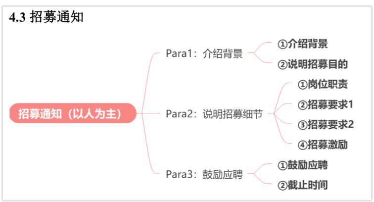

活动通知
四、通知

（一）首段：通知核心信息
[活动]organized by[组织方]will be held at[地点]+ from[时间]to[时间]on[日期]
[活动]hosted by[组织方]is scheduled to take place at[地点]+ from[时间]to[时间]on[日期]
（二）中间段：活动细节
①活动目的/意义/主题why
The primary purpose of this event is to …
活动的主要目的是
This event seeks/aims/is designed to inspire participants to _.本次活动旨在激发参与者
This event is designed to explore ____ and provide a platform for ____. 本次活动旨在探索_，并提供_平台
②活动具体内容/流程
This event will involve multiple stages, including registration, preliminary rounds, semifinals, finals, and the awards ceremony.
这项赛事将包含多个环节，包括报名、初赛、半决赛、决赛以及颁奖典礼。
This event will include a variety of activities, ranging from the opening speech to the closing ceremony.
这项活动将包括各种活动，涵盖从开幕致辞到闭幕式的各个环节。
③活动价值
Join us for a great opportunity to connect with professionals from different fields, where you can exchange ideas and broaden your horizons.
加入我们，这将是一个与不同领域的专业人士建立联系的绝佳机会，在这里你可以交流思想，拓宽视野。
Join us for a fantastic chance to not only learn something new but also to build lasting connections with others who share your interests.
加入我们，这将是一个不仅能学习新知识，还能与志同道合者建立持久联系的绝佳机会。
Come and you’ll be encouraged to ask questions and share your thoughts, making the event both fun and insightful.
来吧，你将在这里被鼓励提问并分享你的想法，使活动既有趣又富有启发性。
④其他活动亮点
Moreover, our beloved teachers and professors will be invited to attend the awards ceremony.
此外，我们亲爱的老师和教授将被邀请参加颁奖典礼。
The top ten winners will receive amazing prizes!
前十名获胜者将获得令人惊喜的奖品！
（三）结尾段：鼓励参与
①参与方式
Those who are interested in this event can contact us via 123@456.com for signing up or for further information.
有兴趣的参与者可通过_联系我们报名或获取更多信息。
②鼓励参与
We look forward to your participation.
我们期待您的参与。
真题例子
2020 小作文
Directions:
The student union of your university has assigned you to inform the international students about an upcoming singing contest. White a notice in about 100 words.
Write your answer on the ANSWER SHEET.
Do not use your own name in the notice. (10 points)
模板范文（121词）
Notice
Para1: ①There is wonderful news! ②The annual Chinese Songs Singing Contest organized by the Student Union will be held at the auditorium from 7 p.m. to 9 p.m. on December 25th.
Para2: ①This contest is designed to provide a platform for showcasing singing talents and to foster cultural communication. ②This year’s competition will involve multiple stages, including preliminary rounds, semifinals, finals, and the awards ceremony. ③Join us for a fantastic chance to not only learn something new but also to build lasting connections with others who share your interests. ④The top ten winners will receive amazing prizes!
Para3: ①Those who are interested in this event can contact us via 123@456.com for signing up or for further information. ②We look forward to your participation.
The Student Union
December 10th, 2024
范文翻译：
通知
第一段：①好消息！②由学生会主办的年度中文歌曲比赛将于12月25日晚上7点至9点在礼堂举行。
第二段：①本次比赛旨在提供一个展示歌唱才华的平台，并促进文化交流。②今年的比赛将包含多个环节，包括初赛、半决赛、决赛和颁奖典礼。③加入我们，这将是一个不仅能学习新知识，还能与志同道合者建立持久联系的绝佳机会。④前十名获胜者将获得令人惊喜的奖品！
第三段：①有兴趣的参与者可以通过 123@456.com 联系我们以报名或获取更多信息。②我们期待您的参与。
学生会
事务通知
4.2 事务通知（指引型）
Para1: 说明目的 —— ①通知目的&内容
① 系统功能
事务通知（指引型）
Para2：说明操作细节
②使用流程
③开放时间
Para3：提供更多帮助
④ 辅助措施
（一）首段：说明目的
①通知目的&内容
In order to help you adapt to [目的], the notice provides some necessary information about [系统].
为了帮助您适应[某方面]生活，本通知提供了一些关于[系统]的重要信息。
（二）中间段：操作细节
① 系统功能
The[系统]is designed to provide you with the necessary tools and resources and is essential for your[学习/生活/健康].
该[系统]旨在为您提供必要的工具和资源，对您的[某方面]至关重要。
②使用流程
To access the[系统], you need to register using your student ID. Once logged in, you can[操作1]and[操作2].
要访问[系统]，您需要使用学生证注册。登录后，您可以[操作1]和[操作2]。
③开放时间
Please note that [系统]opens on weekdays from [时间 1] to [时间 2].
④ 辅助措施
If you have any questions, an orientation session will be held on Monday at 7:00 p.m. in the lecture hall.
如果您有任何疑问，周一晚上7点在报告厅将会举行一次介绍会议。
（三）结尾段：提供帮助
If you need any further help, please feel free to contact us via xxx@xxxuniversity.edu.cn.
如果您需要进一步帮助，请随时通过 xxx@xxxuniversity.edu.cn 与我们联系。
Should you have any questions, please feel free to reach out to us for assistance.
如果您有任何问题，请随时与我们联系，寻求帮助。
真题例子
2016年小作文
Directions:
Suppose you are a librarian in your university. Write a notice of about 100 words, providing the newly-enrolled international students with relevant information about the library.
You should write neatly on the ANSWER SHEET. Do not sign your own name at the end of the notice. Use “Li Ming” instead. Do not write the address. (10 points)
模板范文（116词）
Notice
Dear international students,
Para1: ①Welcome to our university! ②In order to help you adapt to campus life here, the notice provides some necessary information about our university library.
Para2: ①The library is designed to offer a wide range of resources and study spaces, supporting your academic success and personal growth. ②To access the library, please register with your student ID. ③Once logged in, you can borrow books and use online databases. ④Additionally, please note that the library opens on weekdays from 8:00 a.m. to 10:00 p.m. ⑤If you have any questions, an orientation session will be held on Monday at 7:00 p.m. in the lecture hall.
Para3 : ①If you need any further help, please feel free to contact us via xxx@xxxuniversity.edu.cn.
Yours sincerely,
范文翻译：
Li Ming
通知
亲爱的国际学生们：
第一段：①欢迎来到我们的大学！②为帮助您更好地适应校园生活，本通知为您提供了一些关于大学图书馆的重要信息。
第二段：①图书馆旨在为您提供丰富的资源和学习空间，以支持您的学业发展和个人成长。②要使用图书馆服务，请使用您的学生证进行注册。③注册成功后，您可以借阅图书并使用在线数据库。④此外，请注意，图书馆在工作日的开放时间为上午8点至晚上10点。⑤如果您有任何疑问，欢迎参加于周一晚上7点在报告厅举办的介绍会。
第三段：①如需进一步帮助，请随时通过 xxx@xxxuniversity.edu.cn 联系我们。
此致敬礼，
responsibility and reliability 责任感和可靠性
communication skills 沟通能力
problem-solving skills 解决问题的能力
（一）首段：介绍背景 介绍背景[组织者]has initiated/is organizing/is conducting a[活动/项目].[组织者]已经发起/正在组织/正在开展一项[活动/项目] 说明招募目的To ensure everything runs smoothly, we are looking for a dedicated volunteer/participant/assistant/to join us.为了确保一切顺利进行，我们正在寻找有责任心的志愿者/参与者/助理加入我们。
（二）中间段：招募细节 岗位职责Once recruited, you will be responsible for[岗位职责]and carrying out daily tasks throughout the event.一旦被录用，你将负责[岗位职责]并在活动期间执行日常任务。
常见岗位职责：
preparing relevant materials (e.g., handouts, presentations, reports)
准备相关材料，如讲义、演示文稿或报告
organizing documents and ensuring all resources are accessible 整理文件，确保所有资源可用
②招募要求1
Therefore, an ideal candidate is supposed to demonstrate [能力]
因此，理想的候选人应展示出[能力]。
常见能力:
③招募要求2
Preference will be given to those who are experienced in similar activities/projects.
具有类似活动/项目经验者将被优先考虑。
Applicants with prior experience in similar activities/projects will be given preference.
在类似活动/项目中有相关经验的申请人将被优先考虑。
④招募激励
In gratitude for your assistance, we will provide an hourly wage of 50 yuan during the event/project and award a certificate upon completion.
作为对您支持的感谢，我们将在活动/项目期间提供每小时50元的薪酬，并在结束时颁发证书。
We will offer 50 yuan per hour during the event/project and provide a certificate upon
completion.
活动/项目期间我们将提供每小时50元的薪酬，并在完成后颁发证书
（三）结尾段：鼓励应聘
①鼓励应聘
Don’t miss this opportunity to gain invaluable experience!
不要错过这个机会，获取宝贵的经验！
What a great chance it is to develop new skills and broaden your horizons!
这是个提升新技能、开阔眼界的绝佳机会！
②截止时间
If you are interested, please email your application to 123@456.com before [日期]. 如果您感兴趣，请在[日期]之前将申请发送至 123@456.com。
Please note that the deadline is[日期]. Be sure to apply on time!
请注意，截止日期为[日期]。请务必按时申请！
真题例子
2023年小作文
Directions:
Write a notice to recruit a student for Prof. Smith’s research project on campus sports activities. Specify the duties and requirements of the job.
Write your answer in about 100 words on the ANSWER SHEET. Do not use your own name in the notice; use “Li Ming” instead. (10 points)
模板范文（115词）
Notice
Para1: ①Prof. Smith is conducting a research project on campus sports activities. ②To ensure the smooth progress of the project, we are looking for a dedicated assistant to join our team.
Para2: ①Once recruited, you will be responsible for preparing research materials and carrying out daily tasks throughout the project. ②Therefore, an ideal candidate should demonstrate good communication skills, responsibility, and reliability. ③Preference will be given to those with experience in similar research or sports-related activities. ④We will offer 50 yuan per hour during the project and provide a certificate upon completion.
Para3: ①Don’t miss this opportunity to gain invaluable experience! ②If you are interested, please email your application to 123@456.com before December 25th.
Yours sincerely,
Li Ming
范文翻译：
通知
第一段：①史密斯教授正在进行一项关于校园体育活动的研究项目。②为了确保项目的顺利开展，我们正在寻找一位有责任心的助理加入我们的团队。
第二段：①一旦被录用，您将负责准备研究材料，并在项目期间执行日常任务。②因此，理想的候选人应具备良好的沟通能力、责任感和可靠性。③具有类似研究或体育相关活动经验者将被优先考虑。④项目期间，我们将提供每小时50元的薪酬，并在项目结束后颁发证书。
第三段：①不要错过这个获取宝贵经验的机会！②如果您感兴趣，请在12月25日前将申请发送至123@456.com。
此致敬礼，
真题例子
2019年小作文
Directions:
Suppose you are working for the “Aiding Rural Primary School” project of your university. Write an email to answer the inquiry from an international student volunteer, specifying the details of the project. You should write about 100 words on the ANSWER SHEET. Do not use your own name in the email. Use “Li Ming” instead. (10 points)
素材迁移范文：
Dear Volunteer,
Para1: ①I am delighted to hear from you. ②In your email, you asked for details about the “Aiding Rural Primary School” project, and I am more than willing to provide you with some information.
Para2: ①The primary purpose of this project is to support rural students by providing academic support and organizing cultural exchange activities. ②This project serves as a platform for volunteers to showcase their teaching skills and dedication. ③Therefore, an ideal candidate should demonstrate good communication skills, responsibility, and reliability. ④We will offer 50 yuan per day during the project and provide a certificate upon completion.
Para3: ①Don’t miss this opportunity to gain invaluable experience! ②If you are interested, please email your application to 123@456.com before December 25th.
Yours sincerely, Li Ming
范文翻译：
亲爱的志愿者：
第一段：①很高兴收到您的来信。②在邮件中，您询问了有关“援助农村小学”项目的详细信息，我非常乐意为您提供相关内容。
第二段：①本项目的主要目的是通过提供学业支持和组织文化交流活动来帮助农村学生。②该项目为志愿者提供了展示教学技能和奉献精神的平台。③因此，理想的候选人应具备良好的沟通能力、责任感和可靠性。④项目期间，我们将提供每小时50元的薪酬，并在项目结束后颁发证书。
第三段：①不要错过这个获取宝贵经验的机会！②如果您感兴趣，请在12月25日前将申请发送至123@456.com。
诚挚的，李明